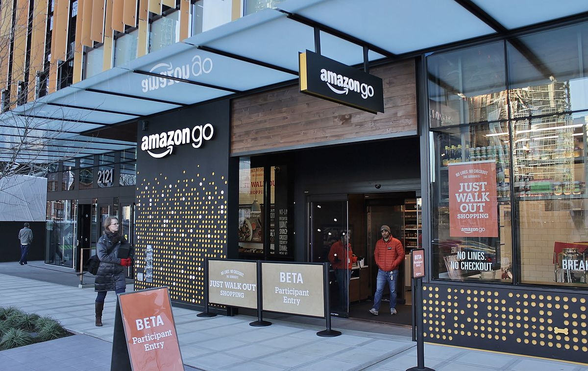

We designed an AR powered mobile app to help people save time, money during their grocery shopping trips.
Duration: 2 months
My Role: User Research, Design, Prototyping, Video
We set out to learn more about what kind of things are bothering other grocery shoppers. We conducted semi-structured interviews with 10 shoppers to understand the problem space and their overall experience when in store. This helped us explore different problems and go deep down into a few major issues that they faced.
We also studied a research conducted by the Food Marketing Institute(FMI). Some key findings of this study showed that though retail stores are still the primary source for grocery shopping among all age groups, shoppers are using digital tools prior to and during shopping trips.
Too much time spent at checkout lines and finding items.
Not aware of items that on sale.
Not sure which item is the best in a selection.
Unsure if items are cheaper elsewhere.
From what we gathered in our research, we created two personas and made a user journey for each of them. This helped us better put ourselves in their shoes.
Marketing Manager
Married - 2 Children
"I want to buy healthy food for my family"
Alexandra is a mother of 2 children (3 years and 6 years old) and works at a large company as a Marketing Manager. She is usually very busy with her job and managing her kid at home. Her husband is an engineer at a multinational company and spends a lot of time traveling around for work. Alexandra wants to save as much time as possible and have a good family time. When she goes shopping, she wants to get the best products at the lowest price. She looks for organic and whole wheat items which are healthy food choices for her family. She tends to spend around 60 minutes each week grocery shopping.
→ Get the healthiest products for my family
→ Know the ingredients of food items
→ Get items at lowest possible price
→ Save time at checkout lines and reach home faster
→ Time constraint as children are waiting at home
→ Hard to know the ingredients of each item
→ Does not know what items are on sale
→ Does not know where some items are located in the store
Student
Single - No Children
"I wish I could find exactly what I want and save time shopping"
Mike is a student pursuing his Master's Degree in Sports Management at Indiana University - Indianapolis. He lives with 2 other students in his rented apartment. He frequently goes shopping at Kroger and Walmart. He prefers to look at reviews products before buying them. He is vegetarian and sometimes faces problems finding vegetarian food. He feels frustrated standing in checkout lines. He spends around 45 minutes shopping and usually makes a list before going to the store to save time.
→ Know the nutritional value of products
→ Spend minimal time shopping in store
→ Get discounts or deals on items
→ Look for reviews and know he is buying the right item
→ Has a limited budget
→ Does not know what to buy and wants help
→ Confused about nutritional values
→ Does not have a lot of time to spend shopping

While researching existing solutions, we found Amazon Go, a grocery store concept that automates the checkout and payment process. Basically, you could walk in, grab your items, and walk out the store without having to go through a checkout line.
Since it already solved the checkout line problem, we decided to expand on this idea.
Having set on using Amazon Go as our baseline, we wanted to add features that would solve the other problems we found people to be having. We gathered up the other solutions we had sketched out and tried to mesh it into Amazon Go.
Find out products that are on sale by using AR. Turn on our camera and point at the products. Items that are on sale will have a flag.
Search for the item you're looking for, and then the AR camera will show you a path to follow to get to your item.
Point your camera at an item and check reviews of that product.
Match the lowest price of nearby stores for a particular item. This feature is not available for everyone (see below).
Since lowering prices would directly affect Amazon's revenue, the price-matching feature would only be available for Amazon Prime users. This way, Amazon would get more Prime subscribers and they, in turn, would get this additional feature.

Now that we had our solution in mind, we could get down to designing some screens. We used Sketch to create the screens and inVision to create our prototype. Our user flow was pretty straightforward.

We wanted to run a few tests on our designs, so we printed out our screens and grabbed 2 colleagues from the Human-Centered-Computing department to walk through our app and give us feedback on its usability.
We also got our inVision prototype, fired it up on one of our phones and went to a grocery store to test our design. We recruited three participants and asked them to try to perform a few tasks using our prototype. We also asked them to think aloud while trying to get around the app and had them share their thoughts on it in the end.

From the informal testing and the guerilla testing at the grocery store, we received quite a bit of useful feedback.
→ On Sale feature would reduce the need to check newspapers
→ Would use Review feature a lot because it would help make decisions
→ Thought Location feature was useful
→ The Price-Match feature was hard to find
→ Would like to see more information on the On Sale screen such as labels on the product and how big the discount is
Overall, the participants were very positive toward our prototype and particularly liked the Price Match and On Sale feature. That made us happy because we knew we hit the right spots where grocery shopping can be improved.
The biggest limitation of our project would be that the AR technology was not implemented in our prototype. Therefore, we had to ask the participants to act as if the prototype had the AR feature. If our prototype could have incorporated the technology, it would have led to more discoveries on potential problems our prototype may have.
This wasn't the first time I designed a mobile app as a solution to a problem, but it was the first time I went through in-the-wild guerilla testing. It felt quite good seeing that other grocery shoppers saw the same benefits that we envisioned when we were designing and trying to improve the shopping experience.